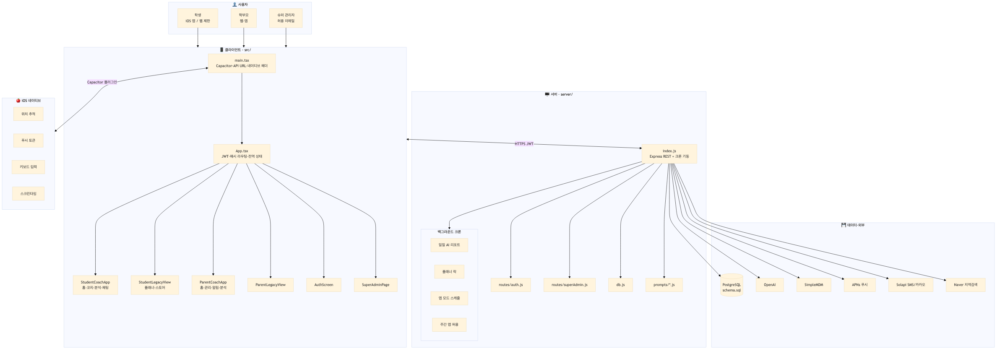
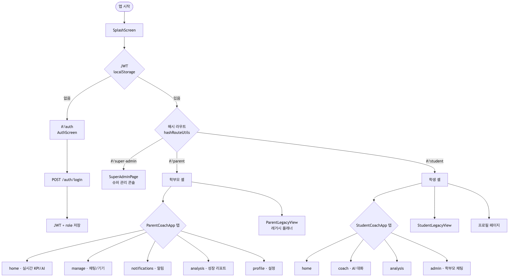
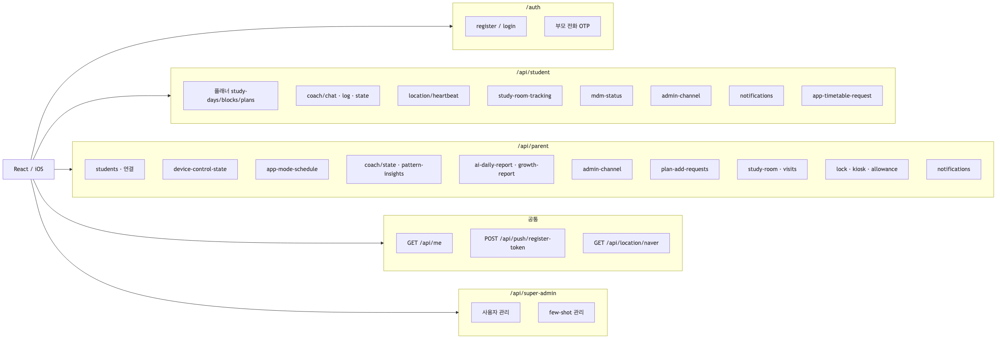
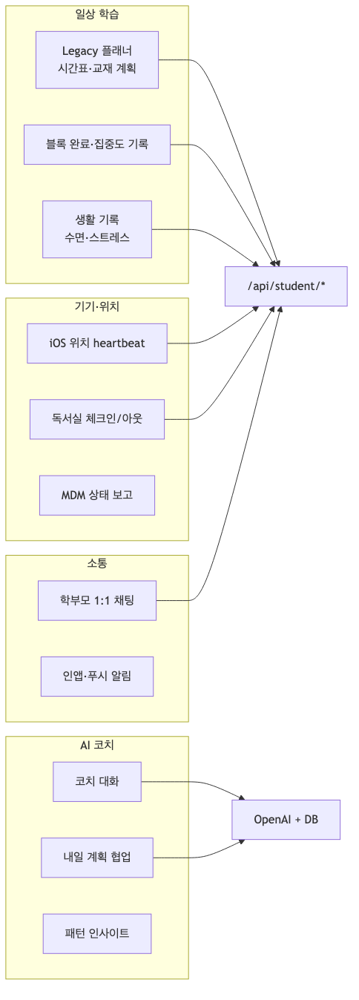
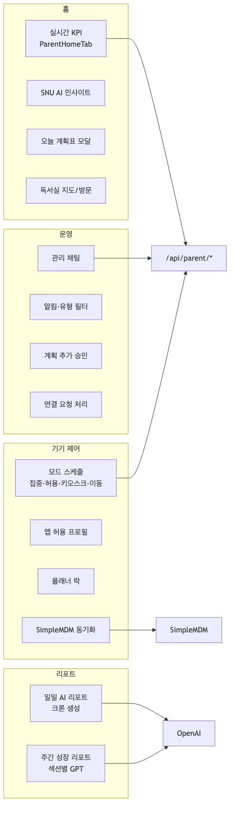
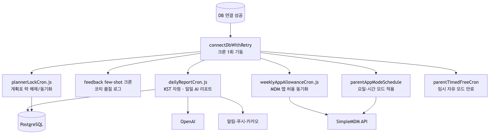
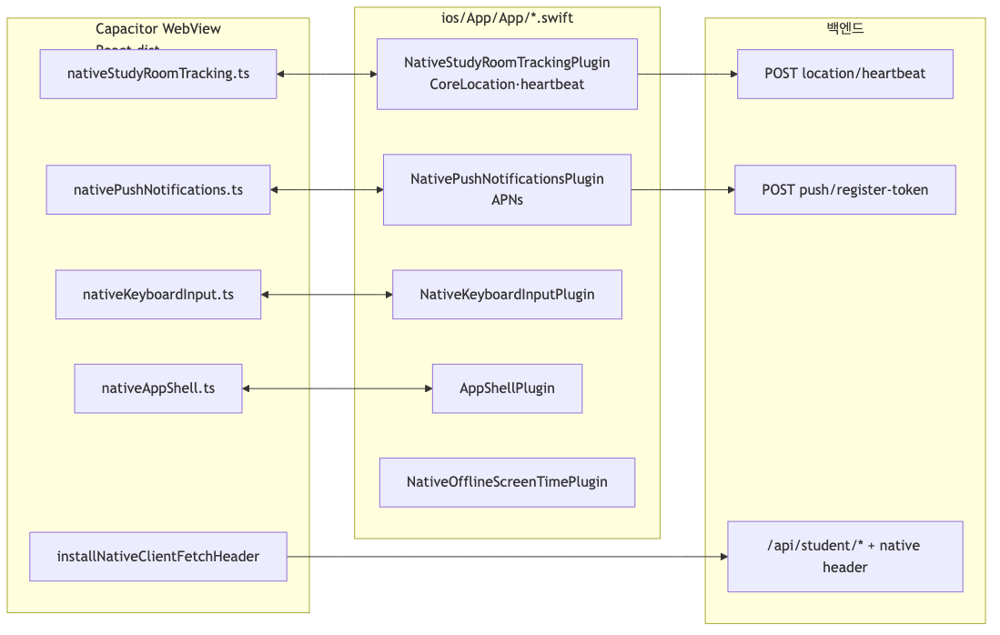
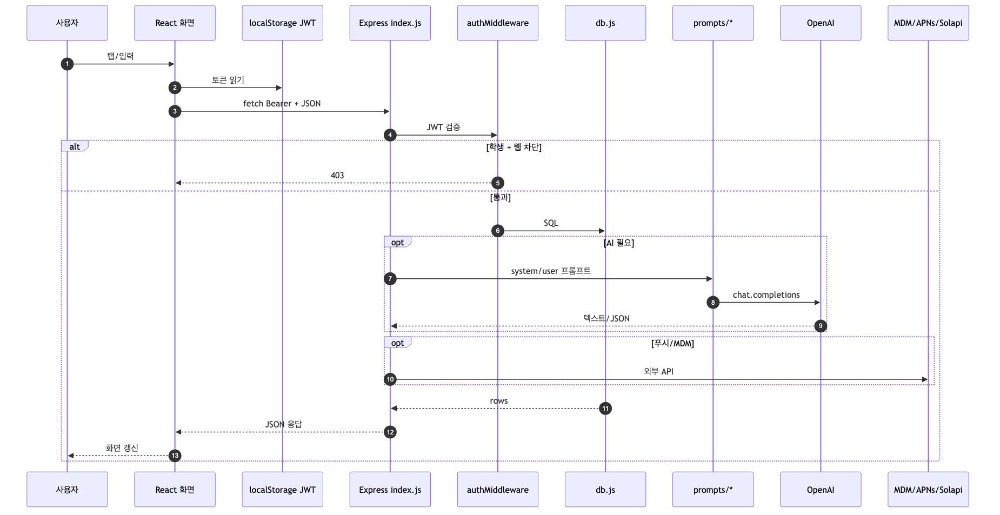
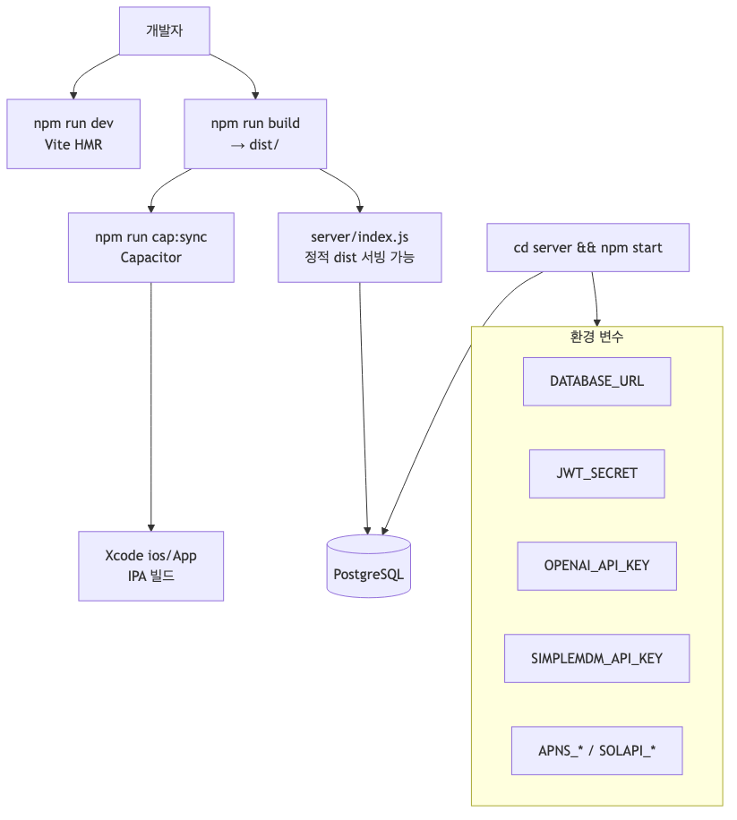

00 · 마스터 개요

사용자 → React/Capacitor → Express → PostgreSQL·OpenAI·MDM·푸시·Naver, iOS 네이티브 플러그인
01 · 클라이언트 라우팅

Splash → JWT → #/auth · #/student · #/parent · #/super-admin, 코치 탭 분기
02 · API 맵

/auth, /api/student, /api/parent, 공통·슈퍼관리 엔드포인트 그룹
03 · 데이터 도메인

계정·플래너·코치·리포트·MDM·독서실·알림 테이블 군
04 · 학생 여정

플래너·기록 → API, AI 코치, 위치·MDM, 학부모 채팅
05 · 학부모 여정

홈 KPI·리포트, 기기 제어·SimpleMDM, 알림·승인·채팅
06 · 백그라운드 크론

일일 AI 리포트, 플래너 락, 앱 모드·허용, timed free
07 · iOS 브리지

WebView TS ↔ Swift 플러그인 ↔ heartbeat·push·student API
08 · 요청 생명주기

사용자 액션 → JWT → authMiddleware → DB / OpenAI / MDM·APNs
09 · 빌드·배포

Vite build → Capacitor sync → Xcode, server + PostgreSQL + env